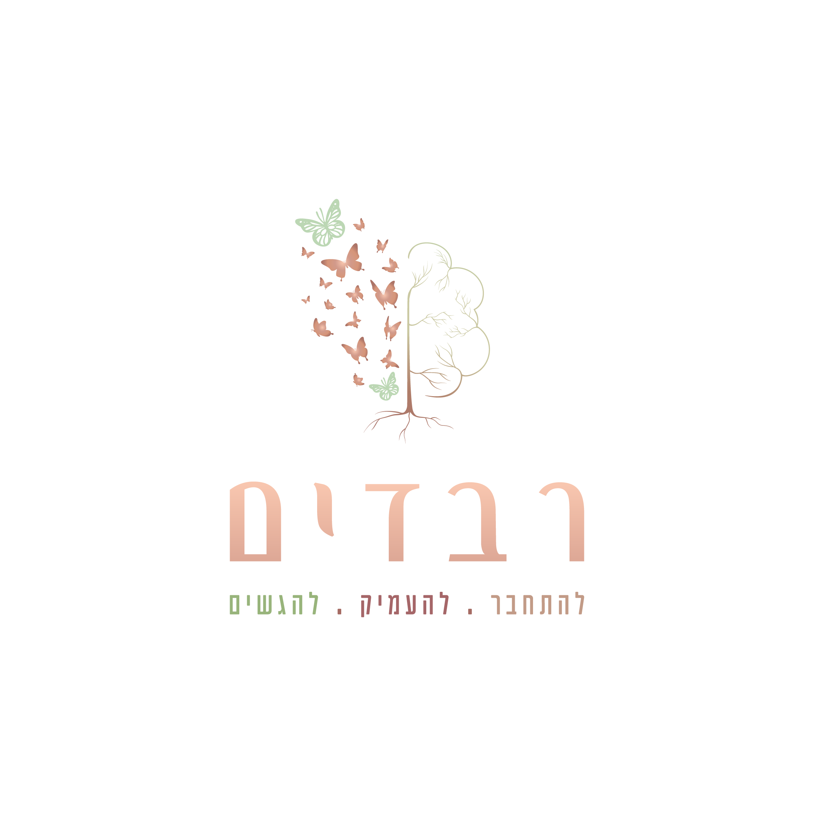

כלים מקצועיים לזיהוי, התערבות ובניית חוסן – מסע אל לב העשייה החינוכית-טיפולית
מה יקרה לנוער שלנו אם לא נפעל עכשיו?
מחקרים מראים שהתערבות מוקדמת ונכונה יכולה לשנות גורלות. ילד אחד שנפל בין הכיסאות, נער אחד שהרגיש שאין מי שרואה אותו – אלה לא סטטיסטיקות. אלה בני ובנות של משפחות בישראל, תלמידים בכיתות שלנו, ילדים של החברה שבנינו.
קורס זה נוצר עבור כל מי שנוגע בחיים של ילדים ונוער – הורים, אנשי חינוך, יועצים, עובדים סוציאליים, מדריכים ומנהלים – ומאמין שלו יש תפקיד בעיצוב עתידם. כי לכל אחד מאיתנו יש כוח לשנות חיים, אם רק יידע איך.
הבנת הסימנים המוקדמים, יצירת קשר מטיב, ובניית בית שהוא מקלט בטוח לכל ילד.
זיהוי מוקדם, התערבות מדויקת וסביבה בית-ספרית שמחזקת במקום לפגוע.
נוער בסיכון הוא לא בעיה של משפחות בודדות – הוא אחריות קולקטיבית שמצריכה מענה קולקטיבי.
14 מפגשים שישנו את הדרך שבה אתם רואים, מבינים ופועלים עם נוער.
ידע שאפשר ליישם כבר מחר בבוקר – בכיתה, בבית, בקהילה.
| # | נושא | תיאור |
|---|---|---|
| 1 | מהו נוער בסיכון – הגדרות ותפיסות | סקירת המושג, תפיסות עכשוויות ופרדיגמות מרכזיות בתחום |
| 2 | גורמי סיכון | זיהוי וניתוח גורמי סיכון ביולוגיים, משפחתיים, חברתיים וסביבתיים |
| 3 | המודל האקולוגי של ברונפנברנר | הבנת מעגלי ההשפעה על ההתפתחות: מיקרו, מזו, אקסו ומקרו סיסטם |
| 4 | זיהוי, איתור מוקדם והתבוננות מקצועית | כלים מעשיים לזיהוי נוער בסיכון וחשיבות ההתערבות בשלב מוקדם |
| 5 | התערבות מוקדמת ומניעה | אסטרטגיות התערבות, מניעה ראשונית, שניונית ושלישונית |
| 6 | בניית חוסן | תיאוריית החוסן, גורמים מגנים ודרכים לטיפוח עמידות אישית |
| 7 | חיזוק משאבים | מיפוי ופיתוח משאבים אישיים, משפחתיים וקהילתיים |
| 8 | משפחה כהקשר סיכון וכחוסן | דינמיקות משפחתוית, גורמי סיכון ומשאבים במשפחה |
| 9 | בית ספר וקהילה – שייכות וקבוצת השווים | תפקיד בית הספר, הקהילה וקבוצת השווים בהתפתחות ובסיכון |
| 10 | קשר מטיב ותקשורת – שיטות NLP | בניית קשר אמון עם נוער, כלי תקשורת מהנלפ: עיגון, מסגור ושיקוף |
| 11 | דימוי עצמי בקרב נוער בסיכון | הבנת תפיסת העצמי, השפעתה על ההתנהגות ודרכי חיזוקה |
| 12 | חרם ודחייה חברתית | זיהוי תופעות דחייה וחרם, השלכותיהן ואסטרטגיות התערבות |
| 13 | טראומה ועבודה עם נפגעי טראומה | הבנת הטראומה ומנגנוניה, גישות רגישות-טראומה ועיקרון הבטיחות |
| 14 | ניתוחי מקרה ואינטגרציה | יישום מעשי של הכלים הנלמדים, ניתוח אירועים מורכבים מהשטח וסיכום אינטגרטיבי של תכנית הקורס. |